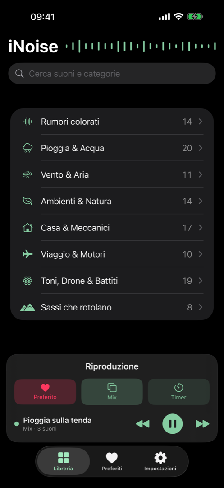
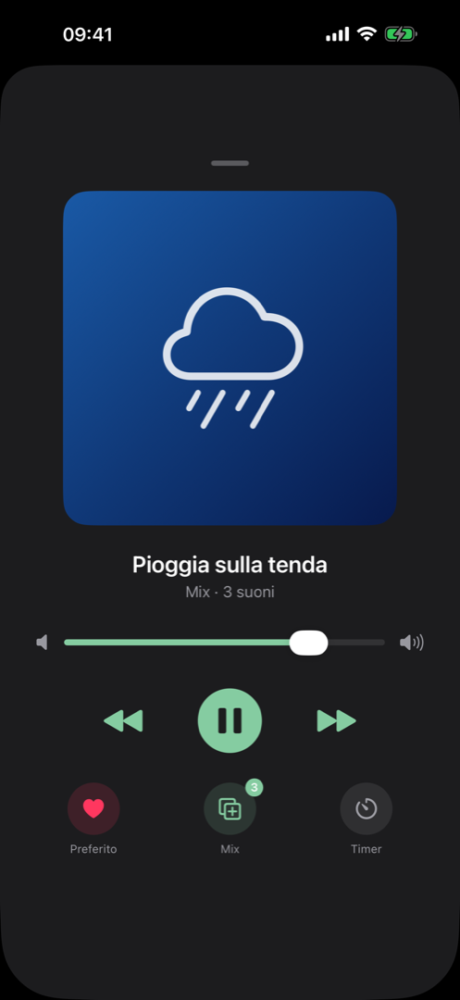
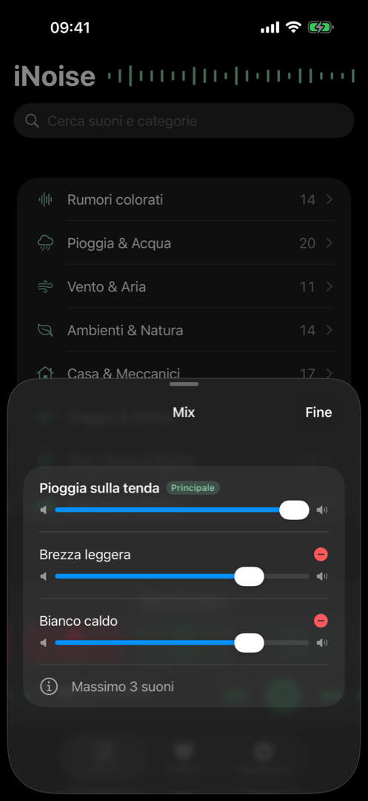

113 suoni, 8 categorie
Pioggia e acqua, vento, natura, città, toni e battiti, sassi e altro ancora. Un catalogo per ogni notte e ogni umore.
Rumore bianco e paesaggi sonori generati dal vivo.
113 suoni sintetizzati in tempo reale, con un loop davvero infinito: mai un salto, mai il fastidioso “clic” delle altre app. Per dormire, concentrarti e rilassarti.
Presto disponibile per iPhone e iPad.
Nessuna traccia registrata: ogni suono nasce da un motore di sintesi che gira sul tuo iPhone.
Pioggia e acqua, vento, natura, città, toni e battiti, sassi e altro ancora. Un catalogo per ogni notte e ogni umore.
L'audio è generato al momento, quindi non salta e non si ripete mai. Zero clic, zero pause: solo suono continuo.
Combina pioggia, vento e rumore bianco caldo con volumi indipendenti e costruisci il tuo ambiente perfetto.
Imposta durata o orario e una dissolvenza dolce: l'audio si spegne da solo mentre ti addormenti.
Palette eleganti che si adattano al tuo stile e all'aspetto di sistema, con modalità chiara e scura.
Riproduzione in background con comandi da blocco schermo, auricolari e CarPlay. Preferiti a portata di tap.
L'app in azione: libreria, player e mixer.



iNoise non raccoglie i tuoi dati, non traccia nulla e non richiede alcun account. Funziona completamente offline: apri l'app e premi play.